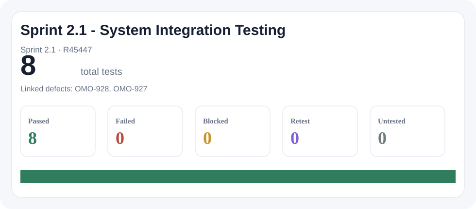
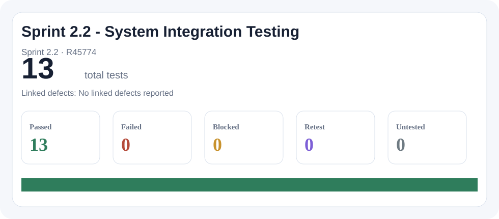
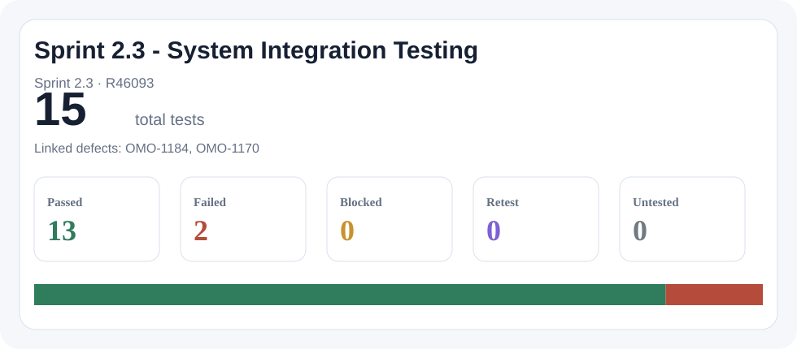
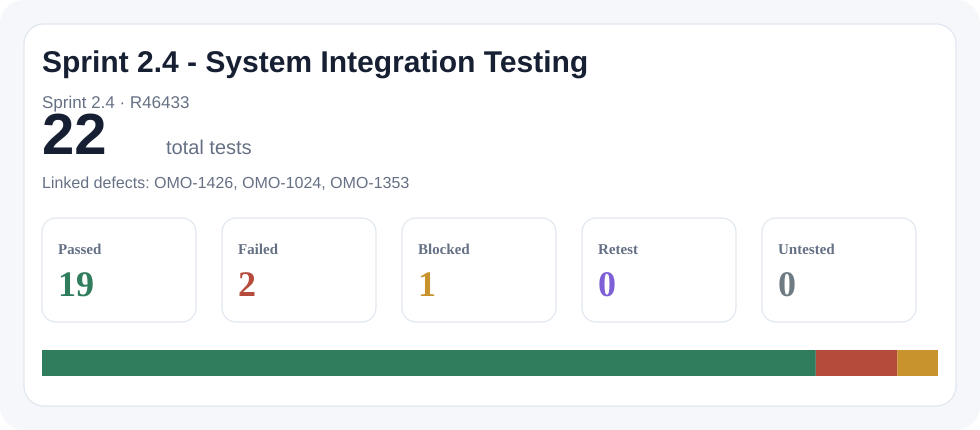
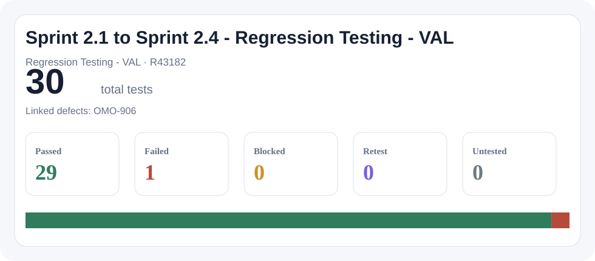

38
Workflow, Review, and Status Improvements
Enhancements and fixes across the SPA review workflow, RAI handling, SRT/CPOC decision points, status tracking, clocks, review pages, and related field behavior.
Draft release notes
Enhancements and fixes across the SPA review workflow, RAI handling, SRT/CPOC decision points, status tracking, clocks, review pages, and related field behavior.
SEA Tool migration and data quality work covering loaded records, duplicate SPA IDs, field mappings, status/date values, formatting, and record completeness.
Integration readiness and event-driven work between OneMAC and SMART, including MSP lifecycle events, attachment metadata, downloadable documents, and lower-environment validation.
SMART role creation and access behavior for Adjudicator, Concurrer, Intake, SRT, CPOC, CMS users, SuperUsers, and restricted identifying information.
HCD, research, UX content, discovery, feedback collection, design decisions, and future-facing product readiness work.
Operational work supporting QA, production readiness, Copado movement, SharePoint/process documentation, and environment preparation.
Standalone cleanup or maintenance items that did not map cleanly to a larger functional theme from the CSV fields.
| Epic Link | Top-level Items |
|---|---|
| OMO-1122 | 23 |
| OMO-581 | 22 |
| OMO-669 | 16 |
| No epic link | 15 |
| OMO-634 | 9 |
| OMO-652 | 9 |
| OMO-655 | 9 |
| OMO-806 | 8 |
| OMO-656 | 6 |
| OMO-670 | 5 |
| OMO-654 | 5 |
| OMO-748 | 4 |
| OMO-747 | 3 |
| OMO-666 | 3 |
| OMO-650 | 2 |
| OMO-671 | 1 |
| OMO-677 | 1 |
| Label | Top-level Items |
|---|---|
| Copado-smart-sync | 44 |
| No_Tests_Required | 41 |
| HCD | 34 |
| Data_Migration_SMART | 17 |
| In-Discovery | 14 |
| Label | 6 |
| demonstrable | 6 |
| DataMigration | 6 |
| SMART_API | 3 |
| Role | 3 |
| MuleSoft_Bugs | 2 |
| Krishna | 2 |
System Integration Testing is shown sprint-wise for Sprint 2.1 through Sprint 2.4. Regression Testing in VAL covers the full Sprint 2.1 to Sprint 2.4 scope.
| Scope | Testing Type | TestRail Run | Total | Passed | Failed | Blocked | Retest | Untested | Linked Defects |
|---|---|---|---|---|---|---|---|---|---|
| Sprint 2.1 | System Integration Testing | R45447 Sprint 2.1 | 8 | 8 | 0 | 0 | 0 | 0 | OMO-928, OMO-927 |
| Sprint 2.2 | System Integration Testing | R45774 Sprint 2.2 | 13 | 13 | 0 | 0 | 0 | 0 | None |
| Sprint 2.3 | System Integration Testing | R46093 Sprint 2.3 | 15 | 13 | 2 | 0 | 0 | 0 | OMO-1184, OMO-1170 |
| Sprint 2.4 | System Integration Testing | R46433 Sprint 2.4 | 22 | 19 | 2 | 1 | 0 | 0 | OMO-1426, OMO-1024, OMO-1353 |
| Sprint 2.1 to Sprint 2.4 | Regression Testing - VAL | R43182 Regression Testing - VAL | 30 | 29 | 1 | 0 | 0 | 0 | OMO-906 |





Enhancements and fixes across the SPA review workflow, RAI handling, SRT/CPOC decision points, status tracking, clocks, review pages, and related field behavior.
Epic links represented: OMO-669 (13), No epic link (9), OMO-634 (9), OMO-666 (3), OMO-670 (3), OMO-671 (1)
| Key | Type | Status | Epic | Summary |
|---|---|---|---|---|
| OMO-1055 | Bug | Test Passed | No epic link | Remove Sub-status, Type, and Sub-Type from List Views & Dashboards/Reports |
| OMO-1322 | Bug | Test Passed | No epic link | Status is changed to Pending Approval after one concurrer indicates 'Do Not Concur' |
| OMO-1353 | Bug | Test Passed | No epic link | Label displayed as "Second Clock" when status moves from Second Clock to Pending RAI |
| OMO-1416 | Bug | Test Passed | No epic link | SRT Assignment Notes page text label issue |
| OMO-1424 | Bug | Done | No epic link | SPA Status is not moved to 'Approved' after Adjudicator approves |
| OMO-1426 | Bug | Test Passed | No epic link | Consulting SME Questions are not included in Consolidated RAI Questions |
| OMO-593 | Bug | Test Passed | No epic link | System allows to create RAI before all SRTs have completed review |
| OMO-927 | Bug | Test Passed | No epic link | Error received when trying to assign CPOC as an SRT with no Assignment Notes |
| OMO-928 | Bug | Done | No epic link | Unable to create RAI if CPOC user has indicated RAI Questions Completed as No during SRT Review |
| OMO-1078 | Story | Test Passed | OMO-634 | Remove Request for Additional Information and Chatter from Right Sidebar 2 QA/support |
| OMO-1088 | Story | Done | OMO-634 | Update RAI Fields 2 QA/support |
| OMO-1089 | Story | Test Passed | OMO-634 | Standardize Submission ID Label to “ID” Across SMART 2 QA/support |
| OMO-755 | Story | Test Passed | OMO-634 | Medicaid SPA: Exclude CPOC from Required SRT Fields and Mandatory Participation 2 QA/support |
| OMO-776 | Story | Test Passed | OMO-634 | Remove “Time Since RAI Issued” After RAI Response Is Received 2 QA/support |
| OMO-787 | Story | Test Passed | OMO-634 | Require CPOC on Initial Save of Submission Review Team Member 2 QA/support |
| OMO-901 | Story | Test Passed | OMO-634 | Update Submission Types & Subtypes to Match CMS‑Provided List 2 QA/support |
| OMO-915 | Story | Test Passed | OMO-634 | Update UI labels for Outstanding Items, 15th Day Call, and Reason for no 15th day call 2 QA/support |
| OMO-917 | Story | Test Passed | OMO-634 | Remove Clarification Information section from Review Page and from SRT Detail Page 2 QA/support |
| OMO-1036 | Story | Test Passed | OMO-666 | Update Label and Header from “Days on Active Clock” to “Days on Clock” 2 QA/support |
| OMO-1263 | Story | Test Passed | OMO-666 | Update Field Label from “First Clock Review” to “First Clock Review Recommendation” 2 QA/support |
| OMO-785 | Story | Test Passed | OMO-666 | Capture First Clock SRT Decision at RAI Issuance for Medicaid SPA 2 QA/support |
| OMO-1028 | Story | Test Passed | OMO-669 | Medicaid SPA: Consolidate RAI Response Dates and Enable Full Field History Tracking 2 QA/support |
| OMO-1044 | Story | Test Passed | OMO-669 | Support Consulting SME SRT Members With Required Participation 3 QA/support |
| OMO-1060 | Story | Test Passed | OMO-669 | Add Group and Division to Contact Record in SMART 2 QA/support |
| OMO-1083 | Story | Test Passed | OMO-669 | Update Progress Bar to Display Only Current Path with Dynamic Status Coloring 3 QA/support |
| OMO-1090 | Story | Test Passed | OMO-669 | Require CPOCs to Meet SRT Review and RAI Decision Standards on SRT Detail Page 2 QA/support |
| OMO-1091 | Story | Test Passed | OMO-669 | Remove Status Field from RAI Detail Page 2 QA/support |
| OMO-1162 | Story | Test Passed | OMO-669 | Progress Bar and Status: Default Status to “Intake Needed” and Progress Bar reflects First Clock and the correct status 3 QA/support |
| OMO-1266 | Story | Test Passed | OMO-669 | Update Label from “Consultant/SME” to “Consulting SME” 2 QA/support |
| OMO-781 | Story | Test Passed | OMO-669 | Make Priority Code Field Optional 2 QA/support |
| OMO-887 | Story | Test Passed | OMO-669 | Document and Track RAI status for Medicaid SPA 3 QA/support |
| OMO-1006 | Task | Test Passed | OMO-669 | Spike: Technical Evaluation of Notes Custom Component in SMART |
| OMO-1265 | Task | Done | OMO-669 | Create Email Alert Templates for Withdrawn and Return to Review Team Statuses |
| OMO-989 | Task | Done | OMO-669 | SPIKE: Track Field-Level Changes in SMART |
| OMO-815 | Story | Test Passed | OMO-670 | Concurrer should be able to Concur to Approve Medicaid SPA 2 QA/support |
| OMO-954 | Story | Test Passed | OMO-670 | Require “Submission Verified Complete” Before RAI, Concurrence, or Approval 3 QA/support |
| OMO-788 | Task | Done | OMO-670 | SPIKE: Support Alternate CPOC for Submission Coverage |
| OMO-889 | Story | Test Passed | OMO-671 | Enforce Submission ID Format, Uniqueness, and State Alignment 2 QA/support |
SEA Tool migration and data quality work covering loaded records, duplicate SPA IDs, field mappings, status/date values, formatting, and record completeness.
Epic links represented: OMO-1122 (23), OMO-654 (5), OMO-748 (4), OMO-650 (2)
| Key | Type | Status | Epic | Summary |
|---|---|---|---|---|
| OMO-1008 | Bug | Test Passed | OMO-1122 | Outstanding Issues |
| OMO-1034 | Bug | Test Passed | OMO-1122 | Component ID with Additional Reviewing Division is missing State Plan data |
| OMO-1051 | Bug | Done | OMO-1122 | Camel casing issue in the displayed message_SubType |
| OMO-1159 | Bug | Done | OMO-1122 | Status date is not displayed for different statuses for the SPA |
| OMO-1167 | Bug | Test Passed | OMO-1122 | CPOC and SRT data not loaded for the SPAs in SMART Application |
| OMO-1169 | Bug | Test Passed | OMO-1122 | Order of the files uploaded in OneMAC are not same in SMART |
| OMO-1184 | Bug | Test Passed | OMO-1122 | SPA Status not updated correctly after CPOC (only one assigned for review) recommends approval |
| OMO-1269 | Bug | Test Passed | OMO-1122 | RAI Status is displayed as RAI Under developement for the SPA IDs loaded in SMART |
| OMO-1291 | Bug | Test Passed | OMO-1122 | SEA Tool's SPA/Waiver name is different from SMART's SPA/Waiver Name |
| OMO-1294 | Bug | Test Passed | OMO-1122 | SMART's Imact Year Values displayed without comma separator |
| OMO-1296 | Bug | Test Passed | OMO-1122 | RAI Response Greater Than 90 days checkbox issue |
| OMO-525 | Bug | Test Passed | OMO-1122 | Active Records Loaded in Sprint 1.1_Second Clock Start Date Issues |
| OMO-544 | Bug | Test Passed | OMO-1122 | Second Clock Start Date not populated for the SPAs with Approved Status |
| OMO-645 | Bug | Test Passed | OMO-1122 | Data Migration_UI fields validation_Missing Status field value |
| OMO-796 | Bug | Test Passed | OMO-1122 | Issues under Attachments tab. |
| OMO-968 | Bug | Test Passed | OMO-1122 | Data truncated for SMART_CMCS_Subject__c from source to target |
| OMO-969 | Bug | Done | OMO-1122 | 33 SPA IDs not loaded into SMART application due to issue with Initial Submission Date |
| OMO-970 | Bug | Test Passed | OMO-1122 | State Early Alerts data issues |
| OMO-974 | Bug | Test Passed | OMO-1122 | Multiple SPA IDs with none as value for SMART_CMCS_Priority_Code__c is mapped to P3 - Expedited Review |
| OMO-981 | Bug | Done | OMO-1122 | Discrepancy in 90th_Day values from SEA tool to SMART |
| OMO-995 | Bug | Test Passed | OMO-1122 | RAI Data not loaded for SPA IDs with duplicates in SMART |
| OMO-996 | Bug | Test Passed | OMO-1122 | SRT Data not loaded for SPA IDs with duplicates in SMART |
| OMO-997 | Bug | Test Passed | OMO-1122 | CPOC Data not loaded for SPA IDs with duplicates in SMART |
| OMO-1308 | Task | Done | OMO-650 | Record Type to QA |
| OMO-921 | Task | Done | OMO-650 | OneMAC DM 2_1_Data_Mapping - SP2.1 |
| OMO-1001 | Story | Done | OMO-654 | SEA Tool Data Migration to SMART for SPA & Waivers - ETL/Load - 2.2 - Cycle 2 QA |
| OMO-919 | Story | Test Passed | OMO-654 | SEA Tool Data Migration to SMART for Medicaid SPA - ETL/Load - 2.1 |
| OMO-1000 | Task | Done | OMO-654 | SEA Tool DM 2_1_Data_Mapping - SP2.2 - Cycle 2 |
| OMO-1058 | Task | Done | OMO-654 | Push the permission sets to QA |
| OMO-918 | Task | Done | OMO-654 | SEA Tool DM 2_1_Data_Mapping - SP2.1 |
| OMO-342 | Story | Test Passed | OMO-748 | Adjudicated - QA SEA Tool DM 4_1_Record-by-Record and Attribute-by-Attribute validation |
| OMO-904 | Story | Test Passed | OMO-748 | SEA Tool Data Migration to SMART for records in MVP scope - Medicaid SPA |
| OMO-957 | Task | Done | OMO-748 | SEA Tool DM for Medicaid SPA - Pushing Fields to QA |
| OMO-964 | Task | Done | OMO-748 | SEA Tool DM for Medicaid SPA - Pushing Fields to QA pt 2 |
Integration readiness and event-driven work between OneMAC and SMART, including MSP lifecycle events, attachment metadata, downloadable documents, and lower-environment validation.
Epic links represented: OMO-655 (9), OMO-656 (5), OMO-747 (1)
| Key | Type | Status | Epic | Summary |
|---|---|---|---|---|
| OMO-1123 | Bug | Test Passed | OMO-655 | Unable to downlaod the documents using downloadable buttons and section override issue |
| OMO-767 | Story | Test Passed | OMO-655 | Update SMART Record Attachments Tab - Some additional updates 2 QA/support |
| OMO-833 | Story | Test Passed | OMO-655 | MSP Record Creation & Initial Status Assignment for MSP Initial Submission Event 2 QA/support |
| OMO-834 | Story | Test Passed | OMO-655 | Attachment Metadata Handling & S3 Link Generation (Initial MSP Submission) 2 QA/support |
| OMO-837 | Story | Test Passed | OMO-655 | Spike - Outbound Event Definition (MSP Lifecycle) |
| OMO-838 | Story | Test Passed | OMO-655 | Medicaid SPA Record Updates for All State Generated Events originating in OneMAC |
| OMO-839 | Story | Done | OMO-655 | Complete Status Transition Logic and Other Fields based on Event |
| OMO-977 | Story | Test Passed | OMO-655 | Preserve Attachment Order from OneMAC |
| OMO-992 | Story | Done | OMO-655 | Test all the Inbound Events using VPN/VPC connectivity |
| OMO-1003 | Story | Done | OMO-656 | UAT Environment Integration Readiness |
| OMO-598 | Story | Test Passed | OMO-656 | Spike: Validate SMART OOTB Support for Event Envelope Capabilities and Document event envelope |
| OMO-818 | Story | Test Passed | OMO-656 | "Initial MSP Submission" Event Integration Validation (Mock-Based) 2 QA/support |
| OMO-821 | Story | Test Passed | OMO-656 | Integration Logging Enablement 1 QA/support |
| OMO-822 | Story | Test Passed | OMO-656 | Lower Environment Integration Readiness 2 QA/support |
| OMO-752 | Task | Done | OMO-747 | Prep - OneMAC SMART to Prod |
SMART role creation and access behavior for Adjudicator, Concurrer, Intake, SRT, CPOC, CMS users, SuperUsers, and restricted identifying information.
Epic links represented: OMO-652 (9), OMO-670 (2)
| Key | Type | Status | Epic | Summary |
|---|---|---|---|---|
| OMO-269 | Story | Test Passed | OMO-652 | Create Intake Role in SMART 2 QA/support |
| OMO-270 | Story | Test Passed | OMO-652 | Create SRT Role in SMART 2 QA/support |
| OMO-271 | Story | Test Passed | OMO-652 | Create Adjudicator Role in SMART 2 QA/support |
| OMO-272 | Story | Test Passed | OMO-652 | Create Concurrer Role in SMART 2 QA/support |
| OMO-273 | Story | Test Passed | OMO-652 | Create General CMS User (Read Only) Role in SMART 3 QA/support |
| OMO-275 | Story | Test Passed | OMO-652 | Create CPOC Role in SMART 2 QA/support |
| OMO-553 | Story | Test Passed | OMO-652 | Restrict visibility of Identifying Information to SuperUsers only for Medicaid SPA 2 QA/support |
| OMO-749 | Story | Test Passed | OMO-652 | Create SuperUser Role in SMART 2 QA/support |
| OMO-750 | Story | Test Passed | OMO-652 | Create CMS General User Role in SMART 2 QA/support |
| OMO-816 | Story | Test Passed | OMO-670 | Adjudicator Role – Approve or Disapprove Medicaid SPA Submissions 2 QA/support |
| OMO-817 | Story | Test Passed | OMO-670 | SRT Member Role – Recommend Approval/Disapproval for Medicaid SPA Submissions 2 QA/support |
HCD, research, UX content, discovery, feedback collection, design decisions, and future-facing product readiness work.
Epic links represented: OMO-581 (22), OMO-806 (8), OMO-669 (3), No epic link (1), OMO-656 (1)
| Key | Type | Status | Epic | Summary |
|---|---|---|---|---|
| OMO-1418 | Task | Done | No epic link | Epic Approval Mural |
| OMO-1042 | Story | Done | OMO-581 | HCD | Define pod norms for roles, responsibilities, and meeting ownership |
| OMO-1155 | Story | Done | OMO-581 | Review SMART MVP materials |
| OMO-1004 | Task | Done | OMO-581 | HCD Designs - Concurrer should be able to Concur to Approve Medicaid SPA |
| OMO-1005 | Task | Done | OMO-581 | HCD Designs - Adjudicator should be able to Adjudicate to Approve Medicaid SPA |
| OMO-1031 | Task | Done | OMO-581 | HCD Companion Letter (Tracking) UI Mockup |
| OMO-1134 | Task | Done | OMO-581 | Review SMART MVP materials |
| OMO-1298 | Task | Done | OMO-581 | Create design decision records |
| OMO-1303 | Task | Done | OMO-581 | Create Qualtrics feedback form for OneMAC and MACPro usability testing |
| OMO-1315 | Task | Done | OMO-581 | Start early designs for waiver temporary extensions |
| OMO-697 | Task | Done | OMO-581 | R&D | Generating letters (companion letter) prep continued |
| OMO-911 | Task | Done | OMO-581 | SMART Alert Emails - UX Content continuation |
| OMO-912 | Task | Done | OMO-581 | Synthesize CHIP meeting notes (4/23) |
| OMO-922 | Task | Done | OMO-581 | Onboarding Samiyah |
| OMO-951 | Task | Done | OMO-581 | Error Message for Attachments Tab |
| OMO-956 | Task | Done | OMO-581 | Prep for Dovetail to OneDrive transition |
| OMO-960 | Task | Done | OMO-581 | Synthesize 1915(c) - Meeting 2 (4/21) |
| OMO-961 | Task | Done | OMO-581 | Synthesize Small Group Discussion Meeting - 4/22 |
| OMO-962 | Task | Done | OMO-581 | Synthesize 1915(b) - Meeting 3 (4/22) |
| OMO-963 | Task | Done | OMO-581 | Synthesize 1915(c) - Meeting 3 (4/22) |
| OMO-976 | Task | Done | OMO-581 | Helper Text: review and edit 1915(c) fields |
| OMO-978 | Task | Done | OMO-581 | Create design for “Enable Formal RAI Response Withdraw” button in SMART |
| OMO-998 | Task | Done | OMO-581 | Alert Emails: Reviewing feedback and making edits continuation |
| OMO-820 | Story | Test Passed | OMO-656 | Design Spike - Error Handling & Integration Handshake |
| OMO-1262 | Task | Done | OMO-669 | Small Group Design: Companion Letter Tracking Iterations |
| OMO-1279 | Task | Done | OMO-669 | SMC Confirm Designs: 1st Clock Memorialized on Review tab |
| OMO-1417 | Task | Done | OMO-669 | Small Group Companion Letter Tracking Design Confirmation |
| OMO-1039 | Story | Done | OMO-806 | RUs | Prepare for small group session |
| OMO-1040 | Story | Done | OMO-806 | RUs| Draft and refine RU workflow for State Users |
| OMO-1041 | Story | Done | OMO-806 | RUs | Explore custom component process |
| OMO-1052 | Task | Done | OMO-806 | RUs | Former state user research write up for Maria |
| OMO-923 | Task | Done | OMO-806 | RUs | Brainstorm design session |
| OMO-924 | Task | Done | OMO-806 | RUs | Elevator pitch for state user research |
| OMO-925 | Task | Done | OMO-806 | RUs | Prep research questions for state users |
| OMO-987 | Task | Done | OMO-806 | RUs | Explore custom component process |
Operational work supporting QA, production readiness, Copado movement, SharePoint/process documentation, and environment preparation.
Epic links represented: No epic link (3), OMO-747 (2), OMO-677 (1)
| Key | Type | Status | Epic | Summary |
|---|---|---|---|---|
| OMO-907 | Bug | Test Passed | No epic link | Home Page (Dashboards and Reports) , Unassigned SPAs - show ID Number deprecated field |
| OMO-1038 | Story | Test Passed | No epic link | Create Test Users in QA |
| OMO-1422 | Story | Done | No epic link | Update Impact Year 1 and Impact Year 2 Fields to Currency Format |
| OMO-751 | Task | Done | OMO-677 | Sharepoint workflow documentation |
| OMO-739 | Story | Done | OMO-747 | prep for Copado pipeline changes (Apr 29-30 Migrating Pipeline) |
| OMO-1065 | Task | Done | OMO-747 | Copado Deployment to QA |
Standalone cleanup or maintenance items that did not map cleanly to a larger functional theme from the CSV fields.
Epic links represented: No epic link (2)
| Key | Type | Status | Epic | Summary |
|---|---|---|---|---|
| OMO-741 | Bug | Done | No epic link | ID Number is not marked as a mandatory field |
| OMO-1304 | Task | Done | No epic link | Load type/sub-type data |
QA, test-case creation, deployment support, and related subtasks grouped under their parent work items.
| Key | Status | Summary |
|---|---|---|
| OMO-1086 | Done | QA(1028) - Consolidate RAI Response Dates and Enable Full Field History Tracking |
| OMO-1087 | Done | QA(1028) - Test Case Creation |
| Key | Status | Summary |
|---|---|---|
| OMO-1148 | Done | QA(1036) - Test Case Creation |
| OMO-1149 | Done | QA(1036) - Update Label and Header from “Days on Active Clock” to “Days on Clock” |
| Key | Status | Summary |
|---|---|---|
| OMO-1180 | Done | Copado Deployment to QA |
| OMO-1289 | Done | QA(1044) - Test Case Creation |
| OMO-1290 | Done | QA(1044) - Support Consulting SME SRT Members With Required Participation |
| Key | Status | Summary |
|---|---|---|
| OMO-1397 | Done | QA(1060) - Test Case Creation |
| OMO-1398 | Done | QA(1060) - Add Group and Division to Contact Record in SMART |
| Key | Status | Summary |
|---|---|---|
| OMO-1307 | Done | QA(1078) - Test Case Creation |
| OMO-1309 | Done | QA(1078) - Remove Request for Additional Information and Chatter from Right Sidebar |
| Key | Status | Summary |
|---|---|---|
| OMO-1150 | Done | QA(1083) - Test Case Creation |
| OMO-1151 | Done | QA(1083) - Update Progress Bar |
| OMO-1176 | Done | Copado Deployment to QA |
| Key | Status | Summary |
|---|---|---|
| OMO-1299 | Done | QA(1088) - Test Case Creation |
| OMO-1300 | Done | QA(1088) - Update RAI Fields |
| Key | Status | Summary |
|---|---|---|
| OMO-1313 | Done | QA(1089) - Test Case Creation |
| OMO-1314 | Done | QA(1089) Standardize Submission ID Label to “ID” Across SMART |
| Key | Status | Summary |
|---|---|---|
| OMO-1330 | Done | QA(1090) - Test Case Creation |
| OMO-1331 | Done | QA(1090) -Require CPOCs to Meet SRT Review and RAI Decision Standards on SRT Detail Page |
| Key | Status | Summary |
|---|---|---|
| OMO-1354 | Done | QA(1091) - Test Case Creation |
| OMO-1355 | Done | QA(1091) - Remove Status Field from RAI Detail Page |
| Key | Status | Summary |
|---|---|---|
| OMO-1287 | Done | QA(1083) - Test Case Creation |
| OMO-1288 | Done | QA(1083) - Default Status to "Intake Needed" |
| OMO-1316 | Done | Copado troubleshooting |
| Key | Status | Summary |
|---|---|---|
| OMO-1301 | Done | QA(1263) - Test Case Creation |
| OMO-1302 | Done | QA(1263) - Update Field Label from “First Clock Review” to “First Clock Review Recommendation” |
| Key | Status | Summary |
|---|---|---|
| OMO-1372 | Done | QA(1266) - Test Case Creation |
| OMO-1373 | Done | QA(1266) - Update Label from “Consultant/SME” to “Consulting SME” |
| Key | Status | Summary |
|---|---|---|
| OMO-1012 | Done | QA(269) - Intake User Role |
| OMO-1013 | Done | QA(269) - Test Case Creation |
| Key | Status | Summary |
|---|---|---|
| OMO-1010 | Done | QA(270) - Test Case Creation |
| OMO-1011 | Done | QA(270) - SRT User Role |
| Key | Status | Summary |
|---|---|---|
| OMO-1370 | Done | QA(271) - Test Case Creation |
| OMO-1371 | Done | QA(271) - Adjudicator User Role |
| Key | Status | Summary |
|---|---|---|
| OMO-1137 | Done | QA(272) - Test Case Creation |
| OMO-1138 | Done | QA(272) - Concurrer Role |
| Key | Status | Summary |
|---|---|---|
| OMO-1053 | Done | QA(273) - Test Case Creation |
| OMO-1054 | Done | QA(273) - General CMS User (Read Only) Role |
| OMO-1178 | Done | Copado Deployment to QA |
| Key | Status | Summary |
|---|---|---|
| OMO-1016 | Done | QA(275) - CPOC User Role |
| OMO-1017 | Done | QA(275) - Test Case Creation |
| Key | Status | Summary |
|---|---|---|
| OMO-1046 | Done | QA(553) - Test Case Creation |
| OMO-1047 | Done | QA(553) - Restrict visibility of Identifying Information to SuperUsers only for Medicaid SPA |
| Key | Status | Summary |
|---|---|---|
| OMO-1048 | Done | QA(749) - Test Case Creation |
| OMO-1049 | Done | QA(749) - Super User Role |
| Key | Status | Summary |
|---|---|---|
| OMO-1014 | Done | QA(750) - Test Case Creation |
| OMO-1015 | Done | QA(750) - CMS General User Role |
| Key | Status | Summary |
|---|---|---|
| OMO-807 | Done | QA(755) - Test Case Creation |
| OMO-808 | Done | QA(755) - Exclude CPOC from Required SRT Fields and Mandatory Participation |
| Key | Status | Summary |
|---|---|---|
| OMO-945 | Done | QA(767) - Test Case Creation |
| OMO-946 | Done | QA(767) - Update SMART Record Attachments Tab - Error Messages |
| Key | Status | Summary |
|---|---|---|
| OMO-929 | Done | QA(776) - Test Case Creation |
| OMO-930 | Done | QA(776) - Remove “Time Since RAI Issued” After RAI Response Is Received |
| Key | Status | Summary |
|---|---|---|
| OMO-1399 | Done | QA(781) - Test Case Creation |
| OMO-1400 | Done | QA(781) - Make Priority Code Field Optional |
| Key | Status | Summary |
|---|---|---|
| OMO-952 | Done | QA(785) - Test Case Creation |
| OMO-953 | Done | QA(785) -Capture First Clock SRT Decision at RAI Issuance |
| Key | Status | Summary |
|---|---|---|
| OMO-949 | Done | QA(787) - Test Case Creation |
| OMO-950 | Done | QA(787) - Require CPOC on Initial Save of Submission Review Team Member |
| Key | Status | Summary |
|---|---|---|
| OMO-1139 | Done | QA(815) - Test Case Creation |
| OMO-1140 | Done | QA(815) - Concurrer Workflow |
| Key | Status | Summary |
|---|---|---|
| OMO-1368 | Done | QA(816) - Test Case Creation |
| OMO-1369 | Done | QA(816) - Adjudicator Workflow |
| Key | Status | Summary |
|---|---|---|
| OMO-1084 | Done | QA(817) - Test Case Creation |
| OMO-1085 | Done | QA(817) - SRT Member Role – Recommend Approval/Disapproval for Medicaid SPA Submissions |
| Key | Status | Summary |
|---|---|---|
| OMO-931 | Done | QA(818) - Test Case Creation |
| OMO-937 | Done | QA(818) - "Initial MSP Submission" Event Integration Validation |
| Key | Status | Summary |
|---|---|---|
| OMO-934 | Done | QA(821) - Test Case Creation |
| Key | Status | Summary |
|---|---|---|
| OMO-932 | Done | QA(822) - Test Case Creation |
| OMO-938 | Done | QA(822) - S1 - Lower Environment Integration Readiness |
| Key | Status | Summary |
|---|---|---|
| OMO-941 | Done | QA(833) - Test Case Creation |
| OMO-942 | Done | QA(833) - S1 - MSP Record Creation & Initial Status Assignment for MSP Initial Submission Event |
| Key | Status | Summary |
|---|---|---|
| OMO-939 | Done | QA(834) - Test Case Creation |
| OMO-940 | Done | QA(834) - S1 -Attachment Metadata Handling & S3 Link Generation (Initial MSP Submission) |
| Key | Status | Summary |
|---|---|---|
| OMO-1141 | Done | QA(887) - Test Case Creation |
| OMO-1142 | Done | QA(887) - Document and Track RAI status for Medicaid SPA |
| OMO-1179 | Done | Copado Deployment to QA |
| Key | Status | Summary |
|---|---|---|
| OMO-947 | Done | QA(889) - Test Case Creation |
| OMO-948 | Test Passed | QA(889) - Enforce Submission ID Format, Uniqueness, and State Alignment |
| Key | Status | Summary |
|---|---|---|
| OMO-1026 | Done | QA(901) - Test Case Creation |
| OMO-1027 | Test Passed | QA(901) - Update Submission Types & Subtypes to Match CMS‑Provided List |
| Key | Status | Summary |
|---|---|---|
| OMO-1056 | Done | QA(915) - Test Case Creation |
| OMO-1057 | Done | QA(915) - Update UI labels for Outstanding Items, 15th Day Call, and Reason for no 15th day call |
| Key | Status | Summary |
|---|---|---|
| OMO-1022 | Done | QA(917) - Test Case Creation |
| OMO-1023 | Done | QA(917) - Remove Clarification Information section |
| Key | Status | Summary |
|---|---|---|
| OMO-1024 | Done | QA(954) - Test Case Creation |
| OMO-1025 | Done | QA(954) - Require “Submission Verified Complete” Before RAI, Concurrence, or Approval |
| OMO-1177 | Done | Copado Deployment to QA |
| Key | Status | Summary |
|---|---|---|
| OMO-943 | Done | QA(819) - Test Case Creation |
Complete reader-facing list sorted by inferred theme, Epic Link, and issue key.
| Key | Type | Status | Theme | Epic | Summary |
|---|---|---|---|---|---|
| OMO-1008 | Bug | Test Passed | Data Migration and Record Quality | OMO-1122 | Outstanding Issues |
| OMO-1034 | Bug | Test Passed | Data Migration and Record Quality | OMO-1122 | Component ID with Additional Reviewing Division is missing State Plan data |
| OMO-1051 | Bug | Done | Data Migration and Record Quality | OMO-1122 | Camel casing issue in the displayed message_SubType |
| OMO-1159 | Bug | Done | Data Migration and Record Quality | OMO-1122 | Status date is not displayed for different statuses for the SPA |
| OMO-1167 | Bug | Test Passed | Data Migration and Record Quality | OMO-1122 | CPOC and SRT data not loaded for the SPAs in SMART Application |
| OMO-1169 | Bug | Test Passed | Data Migration and Record Quality | OMO-1122 | Order of the files uploaded in OneMAC are not same in SMART |
| OMO-1184 | Bug | Test Passed | Data Migration and Record Quality | OMO-1122 | SPA Status not updated correctly after CPOC (only one assigned for review) recommends approval |
| OMO-1269 | Bug | Test Passed | Data Migration and Record Quality | OMO-1122 | RAI Status is displayed as RAI Under developement for the SPA IDs loaded in SMART |
| OMO-1291 | Bug | Test Passed | Data Migration and Record Quality | OMO-1122 | SEA Tool's SPA/Waiver name is different from SMART's SPA/Waiver Name |
| OMO-1294 | Bug | Test Passed | Data Migration and Record Quality | OMO-1122 | SMART's Imact Year Values displayed without comma separator |
| OMO-1296 | Bug | Test Passed | Data Migration and Record Quality | OMO-1122 | RAI Response Greater Than 90 days checkbox issue |
| OMO-525 | Bug | Test Passed | Data Migration and Record Quality | OMO-1122 | Active Records Loaded in Sprint 1.1_Second Clock Start Date Issues |
| OMO-544 | Bug | Test Passed | Data Migration and Record Quality | OMO-1122 | Second Clock Start Date not populated for the SPAs with Approved Status |
| OMO-645 | Bug | Test Passed | Data Migration and Record Quality | OMO-1122 | Data Migration_UI fields validation_Missing Status field value |
| OMO-796 | Bug | Test Passed | Data Migration and Record Quality | OMO-1122 | Issues under Attachments tab. |
| OMO-968 | Bug | Test Passed | Data Migration and Record Quality | OMO-1122 | Data truncated for SMART_CMCS_Subject__c from source to target |
| OMO-969 | Bug | Done | Data Migration and Record Quality | OMO-1122 | 33 SPA IDs not loaded into SMART application due to issue with Initial Submission Date |
| OMO-970 | Bug | Test Passed | Data Migration and Record Quality | OMO-1122 | State Early Alerts data issues |
| OMO-974 | Bug | Test Passed | Data Migration and Record Quality | OMO-1122 | Multiple SPA IDs with none as value for SMART_CMCS_Priority_Code__c is mapped to P3 - Expedited Review |
| OMO-981 | Bug | Done | Data Migration and Record Quality | OMO-1122 | Discrepancy in 90th_Day values from SEA tool to SMART |
| OMO-995 | Bug | Test Passed | Data Migration and Record Quality | OMO-1122 | RAI Data not loaded for SPA IDs with duplicates in SMART |
| OMO-996 | Bug | Test Passed | Data Migration and Record Quality | OMO-1122 | SRT Data not loaded for SPA IDs with duplicates in SMART |
| OMO-997 | Bug | Test Passed | Data Migration and Record Quality | OMO-1122 | CPOC Data not loaded for SPA IDs with duplicates in SMART |
| OMO-1308 | Task | Done | Data Migration and Record Quality | OMO-650 | Record Type to QA |
| OMO-921 | Task | Done | Data Migration and Record Quality | OMO-650 | OneMAC DM 2_1_Data_Mapping - SP2.1 |
| OMO-1000 | Task | Done | Data Migration and Record Quality | OMO-654 | SEA Tool DM 2_1_Data_Mapping - SP2.2 - Cycle 2 |
| OMO-1001 | Story | Done | Data Migration and Record Quality | OMO-654 | SEA Tool Data Migration to SMART for SPA & Waivers - ETL/Load - 2.2 - Cycle 2 QA |
| OMO-1058 | Task | Done | Data Migration and Record Quality | OMO-654 | Push the permission sets to QA |
| OMO-918 | Task | Done | Data Migration and Record Quality | OMO-654 | SEA Tool DM 2_1_Data_Mapping - SP2.1 |
| OMO-919 | Story | Test Passed | Data Migration and Record Quality | OMO-654 | SEA Tool Data Migration to SMART for Medicaid SPA - ETL/Load - 2.1 |
| OMO-342 | Story | Test Passed | Data Migration and Record Quality | OMO-748 | Adjudicated - QA SEA Tool DM 4_1_Record-by-Record and Attribute-by-Attribute validation |
| OMO-904 | Story | Test Passed | Data Migration and Record Quality | OMO-748 | SEA Tool Data Migration to SMART for records in MVP scope - Medicaid SPA |
| OMO-957 | Task | Done | Data Migration and Record Quality | OMO-748 | SEA Tool DM for Medicaid SPA - Pushing Fields to QA |
| OMO-964 | Task | Done | Data Migration and Record Quality | OMO-748 | SEA Tool DM for Medicaid SPA - Pushing Fields to QA pt 2 |
| OMO-1418 | Task | Done | Design, Research, and Content Readiness | No epic link | Epic Approval Mural |
| OMO-1004 | Task | Done | Design, Research, and Content Readiness | OMO-581 | HCD Designs - Concurrer should be able to Concur to Approve Medicaid SPA |
| OMO-1005 | Task | Done | Design, Research, and Content Readiness | OMO-581 | HCD Designs - Adjudicator should be able to Adjudicate to Approve Medicaid SPA |
| OMO-1031 | Task | Done | Design, Research, and Content Readiness | OMO-581 | HCD Companion Letter (Tracking) UI Mockup |
| OMO-1042 | Story | Done | Design, Research, and Content Readiness | OMO-581 | HCD | Define pod norms for roles, responsibilities, and meeting ownership |
| OMO-1134 | Task | Done | Design, Research, and Content Readiness | OMO-581 | Review SMART MVP materials |
| OMO-1155 | Story | Done | Design, Research, and Content Readiness | OMO-581 | Review SMART MVP materials |
| OMO-1298 | Task | Done | Design, Research, and Content Readiness | OMO-581 | Create design decision records |
| OMO-1303 | Task | Done | Design, Research, and Content Readiness | OMO-581 | Create Qualtrics feedback form for OneMAC and MACPro usability testing |
| OMO-1315 | Task | Done | Design, Research, and Content Readiness | OMO-581 | Start early designs for waiver temporary extensions |
| OMO-697 | Task | Done | Design, Research, and Content Readiness | OMO-581 | R&D | Generating letters (companion letter) prep continued |
| OMO-911 | Task | Done | Design, Research, and Content Readiness | OMO-581 | SMART Alert Emails - UX Content continuation |
| OMO-912 | Task | Done | Design, Research, and Content Readiness | OMO-581 | Synthesize CHIP meeting notes (4/23) |
| OMO-922 | Task | Done | Design, Research, and Content Readiness | OMO-581 | Onboarding Samiyah |
| OMO-951 | Task | Done | Design, Research, and Content Readiness | OMO-581 | Error Message for Attachments Tab |
| OMO-956 | Task | Done | Design, Research, and Content Readiness | OMO-581 | Prep for Dovetail to OneDrive transition |
| OMO-960 | Task | Done | Design, Research, and Content Readiness | OMO-581 | Synthesize 1915(c) - Meeting 2 (4/21) |
| OMO-961 | Task | Done | Design, Research, and Content Readiness | OMO-581 | Synthesize Small Group Discussion Meeting - 4/22 |
| OMO-962 | Task | Done | Design, Research, and Content Readiness | OMO-581 | Synthesize 1915(b) - Meeting 3 (4/22) |
| OMO-963 | Task | Done | Design, Research, and Content Readiness | OMO-581 | Synthesize 1915(c) - Meeting 3 (4/22) |
| OMO-976 | Task | Done | Design, Research, and Content Readiness | OMO-581 | Helper Text: review and edit 1915(c) fields |
| OMO-978 | Task | Done | Design, Research, and Content Readiness | OMO-581 | Create design for “Enable Formal RAI Response Withdraw” button in SMART |
| OMO-998 | Task | Done | Design, Research, and Content Readiness | OMO-581 | Alert Emails: Reviewing feedback and making edits continuation |
| OMO-820 | Story | Test Passed | Design, Research, and Content Readiness | OMO-656 | Design Spike - Error Handling & Integration Handshake |
| OMO-1262 | Task | Done | Design, Research, and Content Readiness | OMO-669 | Small Group Design: Companion Letter Tracking Iterations |
| OMO-1279 | Task | Done | Design, Research, and Content Readiness | OMO-669 | SMC Confirm Designs: 1st Clock Memorialized on Review tab |
| OMO-1417 | Task | Done | Design, Research, and Content Readiness | OMO-669 | Small Group Companion Letter Tracking Design Confirmation |
| OMO-1039 | Story | Done | Design, Research, and Content Readiness | OMO-806 | RUs | Prepare for small group session |
| OMO-1040 | Story | Done | Design, Research, and Content Readiness | OMO-806 | RUs| Draft and refine RU workflow for State Users |
| OMO-1041 | Story | Done | Design, Research, and Content Readiness | OMO-806 | RUs | Explore custom component process |
| OMO-1052 | Task | Done | Design, Research, and Content Readiness | OMO-806 | RUs | Former state user research write up for Maria |
| OMO-923 | Task | Done | Design, Research, and Content Readiness | OMO-806 | RUs | Brainstorm design session |
| OMO-924 | Task | Done | Design, Research, and Content Readiness | OMO-806 | RUs | Elevator pitch for state user research |
| OMO-925 | Task | Done | Design, Research, and Content Readiness | OMO-806 | RUs | Prep research questions for state users |
| OMO-987 | Task | Done | Design, Research, and Content Readiness | OMO-806 | RUs | Explore custom component process |
| OMO-1123 | Bug | Test Passed | OneMAC Integration and Attachments | OMO-655 | Unable to downlaod the documents using downloadable buttons and section override issue |
| OMO-767 | Story | Test Passed | OneMAC Integration and Attachments | OMO-655 | Update SMART Record Attachments Tab - Some additional updates 2 QA/support |
| OMO-833 | Story | Test Passed | OneMAC Integration and Attachments | OMO-655 | MSP Record Creation & Initial Status Assignment for MSP Initial Submission Event 2 QA/support |
| OMO-834 | Story | Test Passed | OneMAC Integration and Attachments | OMO-655 | Attachment Metadata Handling & S3 Link Generation (Initial MSP Submission) 2 QA/support |
| OMO-837 | Story | Test Passed | OneMAC Integration and Attachments | OMO-655 | Spike - Outbound Event Definition (MSP Lifecycle) |
| OMO-838 | Story | Test Passed | OneMAC Integration and Attachments | OMO-655 | Medicaid SPA Record Updates for All State Generated Events originating in OneMAC |
| OMO-839 | Story | Done | OneMAC Integration and Attachments | OMO-655 | Complete Status Transition Logic and Other Fields based on Event |
| OMO-977 | Story | Test Passed | OneMAC Integration and Attachments | OMO-655 | Preserve Attachment Order from OneMAC |
| OMO-992 | Story | Done | OneMAC Integration and Attachments | OMO-655 | Test all the Inbound Events using VPN/VPC connectivity |
| OMO-1003 | Story | Done | OneMAC Integration and Attachments | OMO-656 | UAT Environment Integration Readiness |
| OMO-598 | Story | Test Passed | OneMAC Integration and Attachments | OMO-656 | Spike: Validate SMART OOTB Support for Event Envelope Capabilities and Document event envelope |
| OMO-818 | Story | Test Passed | OneMAC Integration and Attachments | OMO-656 | "Initial MSP Submission" Event Integration Validation (Mock-Based) 2 QA/support |
| OMO-821 | Story | Test Passed | OneMAC Integration and Attachments | OMO-656 | Integration Logging Enablement 1 QA/support |
| OMO-822 | Story | Test Passed | OneMAC Integration and Attachments | OMO-656 | Lower Environment Integration Readiness 2 QA/support |
| OMO-752 | Task | Done | OneMAC Integration and Attachments | OMO-747 | Prep - OneMAC SMART to Prod |
| OMO-1304 | Task | Done | Other Product Maintenance | No epic link | Load type/sub-type data |
| OMO-741 | Bug | Done | Other Product Maintenance | No epic link | ID Number is not marked as a mandatory field |
| OMO-1038 | Story | Test Passed | Release Readiness and Operations | No epic link | Create Test Users in QA |
| OMO-1422 | Story | Done | Release Readiness and Operations | No epic link | Update Impact Year 1 and Impact Year 2 Fields to Currency Format |
| OMO-907 | Bug | Test Passed | Release Readiness and Operations | No epic link | Home Page (Dashboards and Reports) , Unassigned SPAs - show ID Number deprecated field |
| OMO-751 | Task | Done | Release Readiness and Operations | OMO-677 | Sharepoint workflow documentation |
| OMO-1065 | Task | Done | Release Readiness and Operations | OMO-747 | Copado Deployment to QA |
| OMO-739 | Story | Done | Release Readiness and Operations | OMO-747 | prep for Copado pipeline changes (Apr 29-30 Migrating Pipeline) |
| OMO-269 | Story | Test Passed | Roles, Permissions, and Access | OMO-652 | Create Intake Role in SMART 2 QA/support |
| OMO-270 | Story | Test Passed | Roles, Permissions, and Access | OMO-652 | Create SRT Role in SMART 2 QA/support |
| OMO-271 | Story | Test Passed | Roles, Permissions, and Access | OMO-652 | Create Adjudicator Role in SMART 2 QA/support |
| OMO-272 | Story | Test Passed | Roles, Permissions, and Access | OMO-652 | Create Concurrer Role in SMART 2 QA/support |
| OMO-273 | Story | Test Passed | Roles, Permissions, and Access | OMO-652 | Create General CMS User (Read Only) Role in SMART 3 QA/support |
| OMO-275 | Story | Test Passed | Roles, Permissions, and Access | OMO-652 | Create CPOC Role in SMART 2 QA/support |
| OMO-553 | Story | Test Passed | Roles, Permissions, and Access | OMO-652 | Restrict visibility of Identifying Information to SuperUsers only for Medicaid SPA 2 QA/support |
| OMO-749 | Story | Test Passed | Roles, Permissions, and Access | OMO-652 | Create SuperUser Role in SMART 2 QA/support |
| OMO-750 | Story | Test Passed | Roles, Permissions, and Access | OMO-652 | Create CMS General User Role in SMART 2 QA/support |
| OMO-816 | Story | Test Passed | Roles, Permissions, and Access | OMO-670 | Adjudicator Role – Approve or Disapprove Medicaid SPA Submissions 2 QA/support |
| OMO-817 | Story | Test Passed | Roles, Permissions, and Access | OMO-670 | SRT Member Role – Recommend Approval/Disapproval for Medicaid SPA Submissions 2 QA/support |
| OMO-1055 | Bug | Test Passed | Workflow, Review, and Status Improvements | No epic link | Remove Sub-status, Type, and Sub-Type from List Views & Dashboards/Reports |
| OMO-1322 | Bug | Test Passed | Workflow, Review, and Status Improvements | No epic link | Status is changed to Pending Approval after one concurrer indicates 'Do Not Concur' |
| OMO-1353 | Bug | Test Passed | Workflow, Review, and Status Improvements | No epic link | Label displayed as "Second Clock" when status moves from Second Clock to Pending RAI |
| OMO-1416 | Bug | Test Passed | Workflow, Review, and Status Improvements | No epic link | SRT Assignment Notes page text label issue |
| OMO-1424 | Bug | Done | Workflow, Review, and Status Improvements | No epic link | SPA Status is not moved to 'Approved' after Adjudicator approves |
| OMO-1426 | Bug | Test Passed | Workflow, Review, and Status Improvements | No epic link | Consulting SME Questions are not included in Consolidated RAI Questions |
| OMO-593 | Bug | Test Passed | Workflow, Review, and Status Improvements | No epic link | System allows to create RAI before all SRTs have completed review |
| OMO-927 | Bug | Test Passed | Workflow, Review, and Status Improvements | No epic link | Error received when trying to assign CPOC as an SRT with no Assignment Notes |
| OMO-928 | Bug | Done | Workflow, Review, and Status Improvements | No epic link | Unable to create RAI if CPOC user has indicated RAI Questions Completed as No during SRT Review |
| OMO-1078 | Story | Test Passed | Workflow, Review, and Status Improvements | OMO-634 | Remove Request for Additional Information and Chatter from Right Sidebar 2 QA/support |
| OMO-1088 | Story | Done | Workflow, Review, and Status Improvements | OMO-634 | Update RAI Fields 2 QA/support |
| OMO-1089 | Story | Test Passed | Workflow, Review, and Status Improvements | OMO-634 | Standardize Submission ID Label to “ID” Across SMART 2 QA/support |
| OMO-755 | Story | Test Passed | Workflow, Review, and Status Improvements | OMO-634 | Medicaid SPA: Exclude CPOC from Required SRT Fields and Mandatory Participation 2 QA/support |
| OMO-776 | Story | Test Passed | Workflow, Review, and Status Improvements | OMO-634 | Remove “Time Since RAI Issued” After RAI Response Is Received 2 QA/support |
| OMO-787 | Story | Test Passed | Workflow, Review, and Status Improvements | OMO-634 | Require CPOC on Initial Save of Submission Review Team Member 2 QA/support |
| OMO-901 | Story | Test Passed | Workflow, Review, and Status Improvements | OMO-634 | Update Submission Types & Subtypes to Match CMS‑Provided List 2 QA/support |
| OMO-915 | Story | Test Passed | Workflow, Review, and Status Improvements | OMO-634 | Update UI labels for Outstanding Items, 15th Day Call, and Reason for no 15th day call 2 QA/support |
| OMO-917 | Story | Test Passed | Workflow, Review, and Status Improvements | OMO-634 | Remove Clarification Information section from Review Page and from SRT Detail Page 2 QA/support |
| OMO-1036 | Story | Test Passed | Workflow, Review, and Status Improvements | OMO-666 | Update Label and Header from “Days on Active Clock” to “Days on Clock” 2 QA/support |
| OMO-1263 | Story | Test Passed | Workflow, Review, and Status Improvements | OMO-666 | Update Field Label from “First Clock Review” to “First Clock Review Recommendation” 2 QA/support |
| OMO-785 | Story | Test Passed | Workflow, Review, and Status Improvements | OMO-666 | Capture First Clock SRT Decision at RAI Issuance for Medicaid SPA 2 QA/support |
| OMO-1006 | Task | Test Passed | Workflow, Review, and Status Improvements | OMO-669 | Spike: Technical Evaluation of Notes Custom Component in SMART |
| OMO-1028 | Story | Test Passed | Workflow, Review, and Status Improvements | OMO-669 | Medicaid SPA: Consolidate RAI Response Dates and Enable Full Field History Tracking 2 QA/support |
| OMO-1044 | Story | Test Passed | Workflow, Review, and Status Improvements | OMO-669 | Support Consulting SME SRT Members With Required Participation 3 QA/support |
| OMO-1060 | Story | Test Passed | Workflow, Review, and Status Improvements | OMO-669 | Add Group and Division to Contact Record in SMART 2 QA/support |
| OMO-1083 | Story | Test Passed | Workflow, Review, and Status Improvements | OMO-669 | Update Progress Bar to Display Only Current Path with Dynamic Status Coloring 3 QA/support |
| OMO-1090 | Story | Test Passed | Workflow, Review, and Status Improvements | OMO-669 | Require CPOCs to Meet SRT Review and RAI Decision Standards on SRT Detail Page 2 QA/support |
| OMO-1091 | Story | Test Passed | Workflow, Review, and Status Improvements | OMO-669 | Remove Status Field from RAI Detail Page 2 QA/support |
| OMO-1162 | Story | Test Passed | Workflow, Review, and Status Improvements | OMO-669 | Progress Bar and Status: Default Status to “Intake Needed” and Progress Bar reflects First Clock and the correct status 3 QA/support |
| OMO-1265 | Task | Done | Workflow, Review, and Status Improvements | OMO-669 | Create Email Alert Templates for Withdrawn and Return to Review Team Statuses |
| OMO-1266 | Story | Test Passed | Workflow, Review, and Status Improvements | OMO-669 | Update Label from “Consultant/SME” to “Consulting SME” 2 QA/support |
| OMO-781 | Story | Test Passed | Workflow, Review, and Status Improvements | OMO-669 | Make Priority Code Field Optional 2 QA/support |
| OMO-887 | Story | Test Passed | Workflow, Review, and Status Improvements | OMO-669 | Document and Track RAI status for Medicaid SPA 3 QA/support |
| OMO-989 | Task | Done | Workflow, Review, and Status Improvements | OMO-669 | SPIKE: Track Field-Level Changes in SMART |
| OMO-788 | Task | Done | Workflow, Review, and Status Improvements | OMO-670 | SPIKE: Support Alternate CPOC for Submission Coverage |
| OMO-815 | Story | Test Passed | Workflow, Review, and Status Improvements | OMO-670 | Concurrer should be able to Concur to Approve Medicaid SPA 2 QA/support |
| OMO-954 | Story | Test Passed | Workflow, Review, and Status Improvements | OMO-670 | Require “Submission Verified Complete” Before RAI, Concurrence, or Approval 3 QA/support |
| OMO-889 | Story | Test Passed | Workflow, Review, and Status Improvements | OMO-671 | Enforce Submission ID Format, Uniqueness, and State Alignment 2 QA/support |